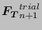
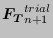

Keyword type: step
This option is used to print selected nodal contact variables in file jobname.frd for subsequent viewing by CalculiX GraphiX. The following variables can be selected (the label is square brackets [] is the one used in the .frd file; for frequency calculations with cyclic symmetry both a real and an imaginary part may be stored, in all other cases only the real part is stored):
Since contact is modeled by nonlinear springs the contact energy corresponds to the spring energy. All variables are stored at the slave nodes.
The relative contact displacements constitute a vector with three components. The first component is the clearance (entity [COPEN]), i.e. the distance between the slave node and the master surface. Only negative values are stored; they correspond to a penetration of the slave node into the master surface. Positive values (i.e. a proper clearance) are set to zero. The second and third component (entities [CSLIP1],[CSLIP2]) represent the projection of the relative displacement between the two contact surfaces onto the master surface. To this end two local tangential unit vectors are defined on the master surface; the first is the normalized projection of a vector along the global x-axis on the master surface. If the global x-axis is nearly orthogonal to the master surface, the projection of a vector along the global z-axis is taken. The second is the vector product of a vector locally normal to the master surface with the first tangential unit vector. Now, the components of the projection of the relative displacement between the two contact surfaces onto the master surface with respect to the first and the second unit tangential vector are the second and third component of CDIS, respectively. They are only calculated if a friction coefficient has been defined underneath *FRICTION.
In the same way the contact stresses constitute a vector, the first component of which is the contact pressure (entity [CPRESS]), while the second and third component are the components of the shear stress vector exerted by the slave surface on the master surface with respect to the first and second unit tangential vector, respectively (entities [CSHEAR1], [CSHEAR2]).
The selected variables are stored for the complete model, but are only nonzero in the slave nodes of contact definitions.
The first occurrence of a *CONTACT FILE keyword card within a step wipes out all previous nodal contact variable selections for file output. If no *CONTACT FILE card is used within a step the selections of the previous step apply. If there is no previous step, no nodal contact variables will be stored.
There are four optional parameters: FREQUENCY, TIME POINTS, LAST ITERATIONS and CONTACT ELEMENTS. The parameters FREQUENCY and TIME POINTS are mutually exclusive.
FREQUENCY applies to nonlinear calculations where a step can consist of several increments. Default is FREQUENCY=1, which indicates that the results of all increments will be stored. FREQUENCY=N with N an integer indicates that the results of every Nth increment will be stored. The final results of a step are always stored. If you only want the final results, choose N very big. The value of N applies to *OUTPUT,*ELEMENT OUTPUT, *EL FILE, *ELPRINT, *NODE OUTPUT, *NODE FILE, *NODE PRINT, *SECTION PRINT, *CONTACT OUTPUT, *CONTACT FILE and *CONTACT PRINT. If the FREQUENCY parameter is used for more than one of these keywords with conflicting values of N, the last value applies to all. A frequency parameter stays active across several steps until it is overwritten by another FREQUENCY value or the TIME POINTS parameter.
With the parameter TIME POINTS a time point sequence can be referenced, defined by a *TIME POINTS keyword. In that case, output will be provided for all time points of the sequence within the step and additionally at the end of the step. No other output will be stored and the FREQUENCY parameter is not taken into account. Within a step only one time point sequence can be active. If more than one is specified, the last one defined on any of the keyword cards *EL FILE, *ELPRINT, *NODE FILE, *NODE PRINT, *SECTION PRINT, *CONTACT FILE and *CONTACT PRINT will be active. The TIME POINTS option should not be used together with the DIRECT option on the procedure card. The TIME POINTS parameters stays active across several steps until it is replaced by another TIME POINTS value or the FREQUENCY parameter.
The parameter LAST ITERATIONS leads to the storage of the displacements in all iterations of the last increment in a file with name ResultsForLastIterations.frd (can be opened with CalculiX GraphiX). This is useful for debugging purposes in case of divergence. No such file is created if this parameter is absent.
Finally, the parameter CONTACT ELEMENTS stores the contact elements which have been generated in each iteration in a file with the name jobname.cel. When opening the frd file with CalculiX GraphiX these files can be read with the command “read jobname.cel inp” and visualized by plotting the elements in the sets contactelements_st _in
_in _at
_at _it, where
_it, where  is the step number,
is the step number,  the increment number,
the increment number,  the attempt number and the iteration number.
the attempt number and the iteration number.
Notice that CDIS and CSTR results are stored together, i.e. specifying CDIS will automatically store CSTR too and vice versa.
First line:
Example: *CONTACT FILE,TIME POINTS=T1 CDIS,CSTR
requests the storage of the relative contact displacements and contact stresses in the .frd file for all time points defined by the T1 time points sequence.
Example files: cubef2f2.